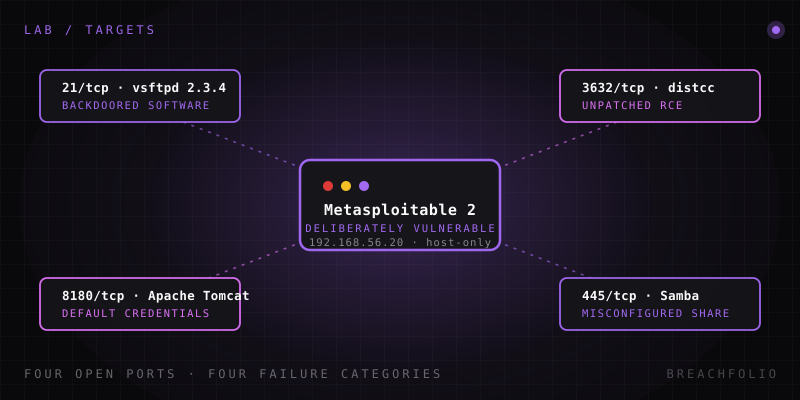

Qué es Metasploitable 2, y por qué todo laboratorio tiene uno.
Una máquina Linux segura, legal y deliberadamente rota hacia la que, tarde o temprano, te dirige casi cualquier curso de pentesting. Esto es lo que lleva dentro en realidad, y por qué sigue importando.
Metasploitable 2 (a menudo escrito como una sola palabra, «Metasploitable2») es una máquina virtual Linux basada en Ubuntu, deliberadamente vulnerable, creada y distribuida por Rapid7 –la misma empresa que está detrás de Metasploit Framework– específicamente como un objetivo de entrenamiento seguro y legal. No es un sistema de producción real, y tampoco es una máquina de CTF construida en torno a la filosofía de la bandera oculta, donde la gracia está en el acertijo. Es más simple y más directa que eso: una máquina plagada de vulnerabilidades reales, bien documentadas y públicamente conocidas, colocadas ahí a propósito, para que tengas algo contra lo que apuntar un escáner y un exploit sin hacer nada ilegal.
Si has pasado algo de tiempo alrededor de cursos de pentesting, guías de estudio afines al OSCP o writeups de laboratorios caseros, es casi seguro que la has visto mencionada. Aparece constantemente por una razón sencilla: es gratuita, es pequeña, arranca de forma fiable en VirtualBox o VMware, y sus vulnerabilidades son lo bastante antiguas y están lo bastante documentadas como para que prácticamente cualquier writeup, walkthrough o módulo de curso coincida con lo que verás en tu propia pantalla. Esa consistencia está infravalorada: cuando tres tutoriales distintos describen el mismo banner, el mismo puerto y la misma ruta de explotación, dedicas tu energía mental a aprender la técnica en lugar de a depurar por qué tu entorno no coincide con el de nadie más.
También es deliberadamente poco vistosa. No hay trasfondo elaborado, ni lore, ni un acertijo de varias fases que oculte la vulnerabilidad "de verdad" detrás de una pista falsa. Cada servicio de la máquina está roto de una forma concreta y con nombre propio, y ese es justo el objetivo: es una implementación de referencia del fracaso, no un juego.
Por qué existe un objetivo de entrenamiento como este
Practicar técnicas de enumeración y explotación contra sistemas reales sin autorización es ilegal y poco ético, y punto: da igual lo curioso que seas o lo "inofensiva" que parezca la técnica. Escanear, explotar o incluso solo hurgar en infraestructura que no es tuya y para la que no tienes permiso escrito explícito para probarla es un delito en la mayoría de jurisdicciones, y "solo estaba aprendiendo" no es una defensa.
Metasploitable 2 resuelve ese problema de forma limpia. Es algo que está pensado explícitamente para que lo ataques, corriendo en tu propia red aislada, sin ninguna víctima al otro lado y sin ninguna ambigüedad sobre el consentimiento. Rapid7 la construyó y la publicó exactamente con ese propósito, lo que significa que toda técnica que practiques contra ella –escaneo de puertos, enumeración de servicios, desarrollo de exploits, post-explotación– tiene un objetivo legítimo y autorizado sobre el que aterrizar.
Esto importa más de lo que podría parecer a primera vista. La autorización es la única línea que separa a un pentester de un delincuente ejecutando exactamente los mismos comandos: las herramientas y la técnica son idénticas, y lo único que cambia es si el dueño del sistema dijo que sí. Crear memoria muscular en una máquina que tienes permiso para romper significa que, cuando finalmente firmes un documento de alcance de trabajo para un cliente, la mecánica ya es una segunda naturaleza y toda tu atención puede ir a la metodología, al informe y a los juicios de valor, en lugar de a averiguar qué hace cada flag en una herramienta que nunca has ejecutado.
Qué lleva dentro en realidad
Esto no es una caja misteriosa: sus vulnerabilidades son información pública genuinamente bien documentada, catalogada en incontables writeups a lo largo de más de una década. A grandes rasgos, viene con:
| Puerto | Componente | Problema |
|---|---|---|
| 21/tcp | vsftpd 2.3.4 | Puerta trasera conocida, plantada deliberadamente en una distribución de código fuente comprometida: uno de los bugs de "shell gratis" más famosos del mundo de las máquinas de entrenamiento. |
| 139/445/tcp | Configuraciones incorrectas de Samba | Exponen recursos compartidos de ficheros y, según la versión, permiten ejecución remota de código a través de fallos conocidos en versiones antiguas de Samba. |
| 3632/tcp | distcc | Corriendo con un fallo de ejecución remota de código en su demonio de red, un ejemplo clásico de una herramienta de aceleración de compilación dejada expuesta sin ninguna autenticación. |
| 1099/tcp | Java RMI | Mal configurado de una forma que permite la carga remota de clases y la ejecución de código sin autenticación. |
| 3306/5432/tcp | Instancias de MySQL y PostgreSQL | Accesibles sin autenticación o con credenciales trivialmente débiles. |
| 8180/tcp | Una instancia desactualizada de Apache Tomcat | Dejada con las credenciales administrativas por defecto. |
| 6667/tcp | UnrealIRCd | Distribuido en una versión con una descarga con puerta trasera muy conocida que le da al atacante una shell remota. |
| 2049/tcp | Configuraciones incorrectas de exportaciones NFS | Reparten acceso al sistema de ficheros de forma más amplia de lo que deberían. |
| – | Credenciales por defecto y débiles | Repartidas por varios otros servicios, además de los bugs concretos anteriores. |
Esto es intencionadamente una lista, no un walkthrough. La explotación real paso a paso de cada uno de estos –los comandos exactos, los módulos de Metasploit, las alternativas manuales– vive en un artículo complementario aparte, porque ese contenido merece espacio para hacerse bien en lugar de comprimirse en un párrafo aquí.
Lo que merece la pena señalar es lo deliberadamente escalonado que está todo esto. Algunos de estos servicios te dan una shell en uno o dos comandos casi sin necesidad de pensar: la puerta trasera de vsftpd y la de UnrealIRCd son casi victorias instantáneas una vez que sabes qué buscar. Otros, como los problemas de Samba y distcc, exigen que entiendas de verdad qué está haciendo el fallo subyacente antes de que un exploit aterrice limpiamente. Y los problemas basados en credenciales de MySQL, PostgreSQL y Tomcat enseñan una habilidad completamente distinta: reconocer que no todo punto de entrada requiere un exploit; a veces la puerta de delante está simplemente sin cerrar.

Las categorías de vulnerabilidad que enseña en realidad
Individualmente, esa lista se lee como un museo de CVEs viejos. Agrupada por la lección subyacente, en realidad enseña cuatro categorías de fallo que siguen muy vivas hoy:
- Software con puertas traseras. vsftpd 2.3.4 y la versión comprometida de UnrealIRCd son ambos casos en los que el propio software fue manipulado antes siquiera de llegar a un usuario: un problema de cadena de suministro, no un bug de programación.
- Credenciales por defecto y débiles. Tomcat, MySQL, PostgreSQL y otros fallan aquí de la manera más mundana posible: nadie cambió la contraseña, o no hacía falta ninguna de entrada.
- Servicios desactualizados y sin parchear. Samba y distcc representan el modo de fallo del "nunca llegamos a actualizar esto": existían correcciones conocidas, solo que no se aplicaron.
- Servicios de compartición de ficheros y RPC mal configurados. Las exportaciones NFS y Java RMI son ambos casos en los que el servicio funciona exactamente como fue diseñado, pero la configuración reparte mucha más confianza de la que debería.
Estas cuatro categorías siguen apareciendo hoy en informes de brechas del mundo real: los compromisos de la cadena de suministro, el credential stuffing contra logins por defecto, los servicios sin parchear expuestos a internet y los recursos compartidos de ficheros excesivamente permisivos son titulares recurrentes, no notas al pie históricas. Esa es la razón real de que una máquina de entrenamiento construida hace bastante más de una década siga siendo relevante: los CVEs concretos son viejos, pero los patrones de fallo que representan no se han ido a ninguna parte.
Esa es también la razón por la que tantos cursos y certificaciones la mantienen en el temario en lugar de jubilarla en favor de algo más nuevo. El objetivo nunca fue memorizar una lista fija de números de CVE de mediados de los 2000: es construir el instinto de preguntarte "¿este software tiene puerta trasera, este login sigue siendo el de por defecto, a este servicio le toca ya un parche, este recurso compartido está repartiendo más de lo que debería?" cada vez que aterrizas en un objetivo nuevo, independientemente del año que sea o de lo que ese objetivo ejecute en realidad.
Cómo encaja en un laboratorio casero
Metasploitable 2 no está pensada para correr aislada. Está pensada para estar en la misma red virtual aislada, host-only (o solo NAT –nunca en modo puente con tu LAN real)–, que una VM atacante, normalmente Kali Linux, de modo que puedas escanearla, enumerarla y explotarla enteramente dentro de tu propia máquina, sin que el tráfico llegue nunca a tocar tu red doméstica ni internet. Si aún no has montado esa topología de red, montar un laboratorio casero en un solo portátil repasa exactamente cómo poner en marcha una red aislada de atacante y objetivo en una única máquina.
Una vez que tu VM atacante y Metasploitable 2 estén ambas en marcha y hablándose en una red aislada, el paso natural siguiente es el walkthrough de explotación propiamente dicho –Metasploitable 2: walkthrough paso a paso– que recorre servicio por servicio la enumeración y la explotación en detalle.
Preguntas frecuentes
¿Quién creó Metasploitable 2 y con qué propósito?
¿Es una máquina de CTF con banderas ocultas?
¿Qué categorías de vulnerabilidad enseña realmente, más allá de los CVE concretos?
¿Puedo ejecutar Metasploitable 2 en mi red doméstica normal?
Daniel A. y Óscar S. llevan Breachfolio, un sitio pequeño e independiente sobre seguridad e IA. Este artículo se redactó con asistencia de IA y una persona lo revisó antes de publicarlo. Escribimos a partir de documentación, fuentes de los fabricantes e investigación publicada, no de pruebas de laboratorio propias, y enlazamos la fuente en la propia frase que se apoya en ella. Cómo trabajamos · Quiénes somos